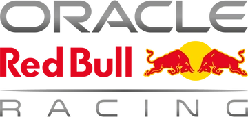

Red Bull Racing, currently competing as Oracle Red Bull Racing and also known simply as Red Bull or RBR, is a Formula One racing team, competing under an Austrian racing licence and based in the United Kingdom. It is one of two Formula One teams owned by conglomerate Red Bull GmbH, the other being Racing Bulls. The Red Bull Racing team was managed by Christian Horner from its formation in 2005 until 2025, when he departed the team and was replaced by Laurent Mekies.
Red Bull had Cosworth engines in 2005 and Ferrari engines in 2006. The team used engines supplied by Renault between 2007 and 2018 (from 2016 to 2018, the Renault engine was re-badged TAG Heuer following the breakdown in the relationship between Red Bull and Renault in 2015).During this partnership, they won four successive Drivers' and Constructors' Championship titles in 2010, 2011, 2012, and 2013, becoming the first Austrian team to win the title.
Red Bull had Cosworth engines in 2005 and Ferrari engines in 2006. The team used engines supplied by Renault between 2007 and 2018 (from 2016 to 2018, the Renault engine was re-badged TAG Heuer following the breakdown in the relationship between Red Bull and Renault in 2015).During this partnership, they won four successive Drivers' and Constructors' Championship titles in 2010, 2011, 2012, and 2013, becoming the first Austrian team to win the title.